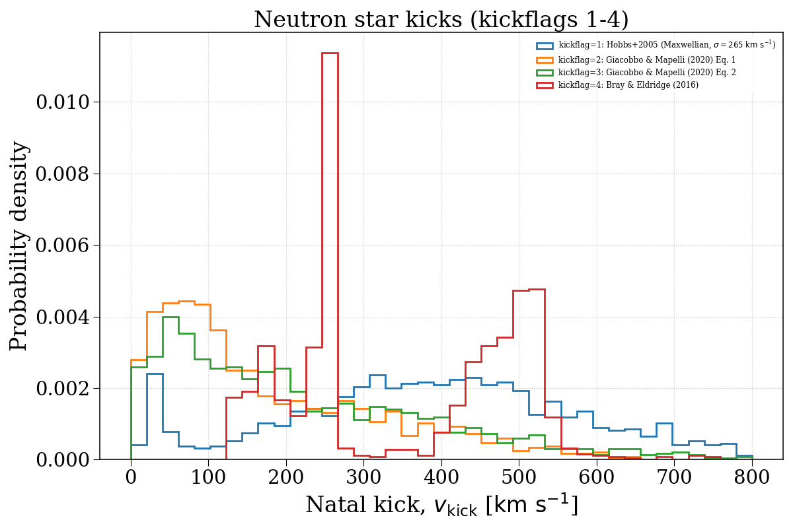
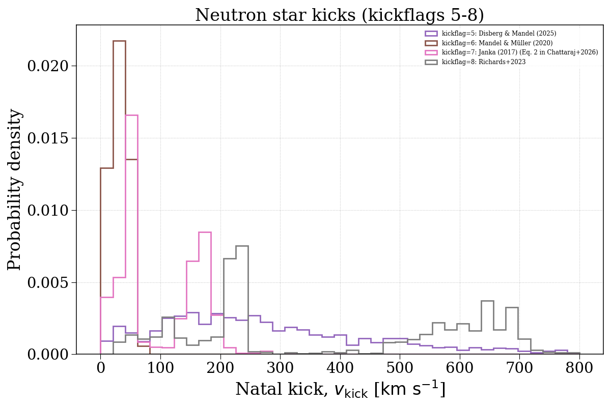
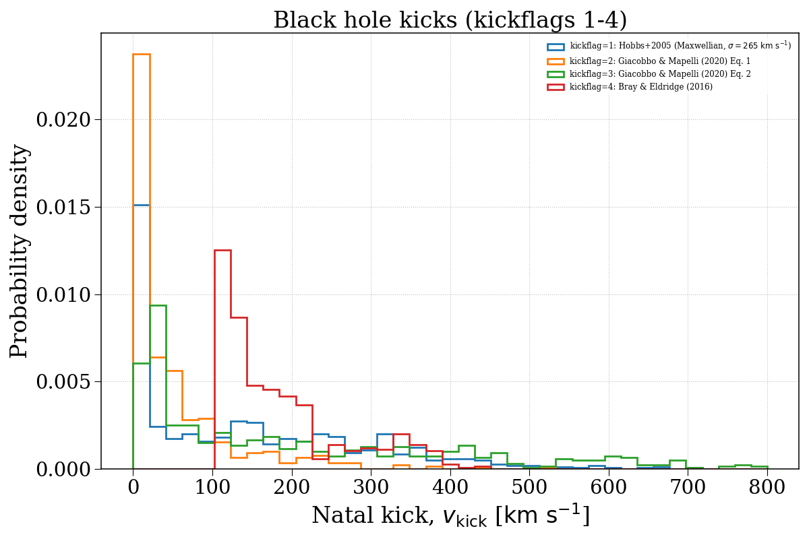
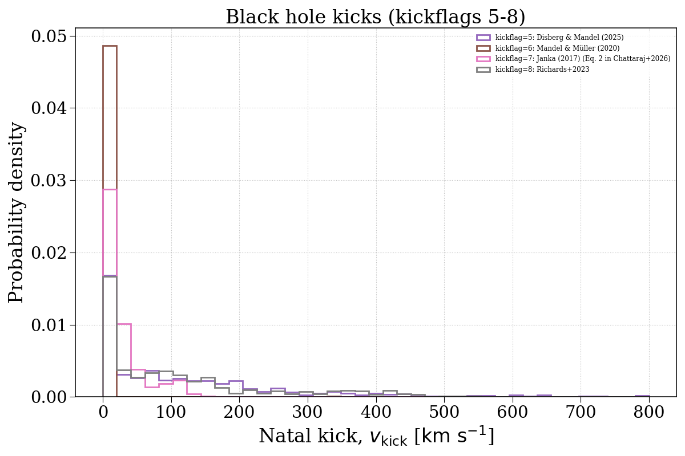

Note
Go to the end to download the full example code.
kickflag¶
This example demonstrates how changing the kickflag parameter can affect the natal kick velocity distributions of compact objects. We separate this into neutron stars and black holes.




Evolving population with kickflag = 1...
Evolving: 0%| | 0/2035 [00:00<?, ?sys/s]
Evolving: 1%| | 12/2035 [00:00<00:19, 104.53sys/s]
Evolving: 1%|▏ | 27/2035 [00:00<00:25, 79.85sys/s]
Evolving: 2%|▏ | 36/2035 [00:00<00:27, 72.54sys/s]
Evolving: 3%|▎ | 56/2035 [00:00<00:19, 102.82sys/s]
Evolving: 3%|▎ | 68/2035 [00:00<00:28, 68.33sys/s]
Evolving: 5%|▌ | 104/2035 [00:01<00:15, 125.92sys/s]
Evolving: 6%|▌ | 122/2035 [00:01<00:15, 127.42sys/s]
Evolving: 7%|▋ | 138/2035 [00:01<00:14, 128.20sys/s]
Evolving: 8%|▊ | 153/2035 [00:01<00:15, 124.49sys/s]
Evolving: 8%|▊ | 169/2035 [00:01<00:15, 117.89sys/s]
Evolving: 9%|▉ | 182/2035 [00:01<00:19, 93.52sys/s]
Evolving: 10%|▉ | 197/2035 [00:01<00:17, 103.56sys/s]
Evolving: 10%|█ | 213/2035 [00:01<00:15, 114.13sys/s]
Evolving: 11%|█ | 227/2035 [00:02<00:16, 108.43sys/s]
Evolving: 12%|█▏ | 243/2035 [00:02<00:15, 118.45sys/s]
Evolving: 13%|█▎ | 258/2035 [00:02<00:14, 124.02sys/s]
Evolving: 13%|█▎ | 272/2035 [00:02<00:13, 126.82sys/s]
Evolving: 14%|█▍ | 286/2035 [00:02<00:13, 129.60sys/s]
Evolving: 15%|█▍ | 300/2035 [00:02<00:13, 130.16sys/s]
Evolving: 16%|█▌ | 316/2035 [00:02<00:12, 135.39sys/s]
Evolving: 16%|█▌ | 330/2035 [00:02<00:15, 112.14sys/s]
Evolving: 17%|█▋ | 347/2035 [00:03<00:13, 125.00sys/s]
Evolving: 18%|█▊ | 361/2035 [00:03<00:13, 125.98sys/s]
Evolving: 18%|█▊ | 375/2035 [00:03<00:16, 101.69sys/s]
Evolving: 19%|█▉ | 394/2035 [00:03<00:15, 109.09sys/s]
Evolving: 20%|██ | 413/2035 [00:03<00:12, 126.80sys/s]
Evolving: 21%|██ | 428/2035 [00:03<00:12, 127.21sys/s]
Evolving: 22%|██▏ | 442/2035 [00:03<00:12, 128.18sys/s]
Evolving: 22%|██▏ | 456/2035 [00:03<00:12, 123.67sys/s]
Evolving: 23%|██▎ | 469/2035 [00:04<00:12, 120.76sys/s]
Evolving: 24%|██▍ | 486/2035 [00:04<00:12, 123.30sys/s]
Evolving: 25%|██▍ | 502/2035 [00:04<00:12, 127.17sys/s]
Evolving: 26%|██▌ | 519/2035 [00:04<00:11, 137.05sys/s]
Evolving: 26%|██▌ | 533/2035 [00:04<00:13, 108.70sys/s]
Evolving: 27%|██▋ | 553/2035 [00:04<00:16, 91.87sys/s]
Evolving: 28%|██▊ | 574/2035 [00:05<00:15, 95.05sys/s]
Evolving: 29%|██▉ | 594/2035 [00:05<00:12, 113.78sys/s]
Evolving: 30%|██▉ | 608/2035 [00:05<00:14, 97.52sys/s]
Evolving: 31%|███ | 631/2035 [00:05<00:11, 119.63sys/s]
Evolving: 32%|███▏ | 648/2035 [00:05<00:11, 117.36sys/s]
Evolving: 33%|███▎ | 663/2035 [00:05<00:14, 95.41sys/s]
Evolving: 34%|███▍ | 691/2035 [00:06<00:10, 130.04sys/s]
Evolving: 35%|███▍ | 707/2035 [00:06<00:10, 131.05sys/s]
Evolving: 36%|███▌ | 724/2035 [00:06<00:09, 137.71sys/s]
Evolving: 36%|███▋ | 740/2035 [00:06<00:09, 131.48sys/s]
Evolving: 37%|███▋ | 755/2035 [00:06<00:11, 111.47sys/s]
Evolving: 38%|███▊ | 775/2035 [00:06<00:12, 101.26sys/s]
Evolving: 39%|███▉ | 803/2035 [00:06<00:09, 129.26sys/s]
Evolving: 40%|████ | 820/2035 [00:07<00:09, 125.05sys/s]
Evolving: 41%|████ | 834/2035 [00:07<00:11, 103.67sys/s]
Evolving: 42%|████▏ | 859/2035 [00:07<00:09, 120.05sys/s]
Evolving: 43%|████▎ | 878/2035 [00:07<00:08, 132.62sys/s]
Evolving: 44%|████▍ | 893/2035 [00:07<00:08, 129.04sys/s]
Evolving: 45%|████▍ | 907/2035 [00:07<00:11, 95.53sys/s]
Evolving: 46%|████▌ | 928/2035 [00:08<00:09, 117.20sys/s]
Evolving: 47%|████▋ | 949/2035 [00:08<00:08, 135.15sys/s]
Evolving: 47%|████▋ | 965/2035 [00:08<00:12, 88.94sys/s]
Evolving: 49%|████▉ | 998/2035 [00:08<00:08, 129.23sys/s]
Evolving: 50%|████▉ | 1016/2035 [00:08<00:09, 103.69sys/s]
Evolving: 51%|█████ | 1038/2035 [00:09<00:08, 123.62sys/s]
Evolving: 52%|█████▏ | 1055/2035 [00:09<00:10, 91.72sys/s]
Evolving: 53%|█████▎ | 1077/2035 [00:09<00:08, 111.45sys/s]
Evolving: 54%|█████▎ | 1093/2035 [00:09<00:08, 117.04sys/s]
Evolving: 54%|█████▍ | 1108/2035 [00:09<00:09, 102.97sys/s]
Evolving: 55%|█████▌ | 1127/2035 [00:09<00:07, 114.83sys/s]
Evolving: 56%|█████▌ | 1143/2035 [00:09<00:07, 124.38sys/s]
Evolving: 57%|█████▋ | 1158/2035 [00:10<00:07, 119.11sys/s]
Evolving: 58%|█████▊ | 1172/2035 [00:10<00:08, 99.08sys/s]
Evolving: 58%|█████▊ | 1190/2035 [00:10<00:09, 88.94sys/s]
Evolving: 59%|█████▉ | 1203/2035 [00:10<00:08, 92.97sys/s]
Evolving: 61%|██████ | 1233/2035 [00:10<00:06, 121.85sys/s]
Evolving: 61%|██████▏ | 1250/2035 [00:10<00:05, 130.90sys/s]
Evolving: 62%|██████▏ | 1265/2035 [00:11<00:08, 95.02sys/s]
Evolving: 64%|██████▎ | 1295/2035 [00:11<00:05, 131.83sys/s]
Evolving: 64%|██████▍ | 1312/2035 [00:11<00:05, 123.64sys/s]
Evolving: 65%|██████▌ | 1327/2035 [00:11<00:07, 99.19sys/s]
Evolving: 66%|██████▌ | 1340/2035 [00:11<00:06, 99.34sys/s]
Evolving: 67%|██████▋ | 1362/2035 [00:11<00:05, 123.37sys/s]
Evolving: 68%|██████▊ | 1377/2035 [00:12<00:05, 125.23sys/s]
Evolving: 68%|██████▊ | 1392/2035 [00:12<00:05, 125.57sys/s]
Evolving: 69%|██████▉ | 1406/2035 [00:12<00:04, 127.02sys/s]
Evolving: 70%|██████▉ | 1420/2035 [00:12<00:07, 84.74sys/s]
Evolving: 71%|███████ | 1445/2035 [00:12<00:05, 114.24sys/s]
Evolving: 72%|███████▏ | 1460/2035 [00:12<00:04, 118.91sys/s]
Evolving: 73%|███████▎ | 1476/2035 [00:12<00:04, 121.19sys/s]
Evolving: 73%|███████▎ | 1490/2035 [00:13<00:05, 95.27sys/s]
Evolving: 74%|███████▍ | 1513/2035 [00:13<00:04, 122.39sys/s]
Evolving: 75%|███████▌ | 1528/2035 [00:13<00:04, 113.84sys/s]
Evolving: 76%|███████▌ | 1546/2035 [00:13<00:03, 125.46sys/s]
Evolving: 77%|███████▋ | 1561/2035 [00:13<00:04, 101.85sys/s]
Evolving: 77%|███████▋ | 1573/2035 [00:14<00:05, 81.10sys/s]
Evolving: 79%|███████▊ | 1602/2035 [00:14<00:03, 116.29sys/s]
Evolving: 80%|███████▉ | 1618/2035 [00:14<00:04, 90.91sys/s]
Evolving: 81%|████████ | 1642/2035 [00:14<00:03, 114.94sys/s]
Evolving: 81%|████████▏ | 1657/2035 [00:14<00:04, 86.63sys/s]
Evolving: 83%|████████▎ | 1679/2035 [00:15<00:04, 86.87sys/s]
Evolving: 83%|████████▎ | 1698/2035 [00:15<00:03, 98.41sys/s]
Evolving: 85%|████████▍ | 1723/2035 [00:15<00:02, 124.54sys/s]
Evolving: 85%|████████▌ | 1739/2035 [00:15<00:02, 128.40sys/s]
Evolving: 86%|████████▌ | 1755/2035 [00:15<00:02, 109.10sys/s]
Evolving: 87%|████████▋ | 1774/2035 [00:15<00:02, 91.07sys/s]
Evolving: 89%|████████▊ | 1806/2035 [00:16<00:01, 128.79sys/s]
Evolving: 90%|████████▉ | 1823/2035 [00:16<00:01, 123.34sys/s]
Evolving: 90%|█████████ | 1838/2035 [00:16<00:01, 114.48sys/s]
Evolving: 91%|█████████ | 1856/2035 [00:16<00:01, 122.15sys/s]
Evolving: 92%|█████████▏| 1871/2035 [00:16<00:01, 120.49sys/s]
Evolving: 93%|█████████▎| 1885/2035 [00:16<00:01, 105.02sys/s]
Evolving: 94%|█████████▎| 1905/2035 [00:16<00:01, 124.61sys/s]
Evolving: 94%|█████████▍| 1920/2035 [00:17<00:00, 124.90sys/s]
Evolving: 95%|█████████▌| 1937/2035 [00:17<00:00, 135.19sys/s]
Evolving: 96%|█████████▌| 1952/2035 [00:17<00:00, 126.02sys/s]
Evolving: 97%|█████████▋| 1966/2035 [00:17<00:00, 129.02sys/s]
Evolving: 97%|█████████▋| 1980/2035 [00:17<00:00, 131.10sys/s]
Evolving: 98%|█████████▊| 1994/2035 [00:17<00:00, 132.29sys/s]
Evolving: 99%|█████████▊| 2008/2035 [00:17<00:00, 95.42sys/s]
Evolving: 100%|█████████▉| 2027/2035 [00:17<00:00, 110.01sys/s]
Evolving: 100%|██████████| 2035/2035 [00:17<00:00, 113.19sys/s]
[Time taken: 18.2327 seconds]
Evolving population with kickflag = 2...
Evolving: 0%| | 0/2035 [00:00<?, ?sys/s]
Evolving: 0%| | 4/2035 [00:00<00:56, 36.17sys/s]
Evolving: 1%| | 22/2035 [00:00<00:17, 114.39sys/s]
Evolving: 2%|▏ | 34/2035 [00:00<00:23, 85.54sys/s]
Evolving: 2%|▏ | 44/2035 [00:00<00:28, 69.34sys/s]
Evolving: 3%|▎ | 59/2035 [00:00<00:22, 87.84sys/s]
Evolving: 3%|▎ | 69/2035 [00:00<00:31, 62.38sys/s]
Evolving: 5%|▌ | 102/2035 [00:01<00:16, 116.52sys/s]
Evolving: 6%|▌ | 118/2035 [00:01<00:15, 124.18sys/s]
Evolving: 7%|▋ | 134/2035 [00:01<00:15, 118.98sys/s]
Evolving: 7%|▋ | 148/2035 [00:01<00:15, 118.41sys/s]
Evolving: 8%|▊ | 165/2035 [00:01<00:14, 130.46sys/s]
Evolving: 9%|▉ | 180/2035 [00:01<00:20, 90.07sys/s]
Evolving: 10%|▉ | 197/2035 [00:02<00:18, 97.01sys/s]
Evolving: 11%|█ | 217/2035 [00:02<00:15, 115.90sys/s]
Evolving: 11%|█▏ | 231/2035 [00:02<00:16, 109.97sys/s]
Evolving: 12%|█▏ | 249/2035 [00:02<00:14, 124.79sys/s]
Evolving: 13%|█▎ | 263/2035 [00:02<00:13, 126.97sys/s]
Evolving: 14%|█▎ | 277/2035 [00:02<00:13, 128.83sys/s]
Evolving: 14%|█▍ | 291/2035 [00:02<00:13, 128.92sys/s]
Evolving: 15%|█▌ | 306/2035 [00:02<00:13, 129.46sys/s]
Evolving: 16%|█▌ | 320/2035 [00:03<00:17, 96.35sys/s]
Evolving: 17%|█▋ | 346/2035 [00:03<00:12, 132.00sys/s]
Evolving: 18%|█▊ | 362/2035 [00:03<00:12, 132.23sys/s]
Evolving: 19%|█▊ | 377/2035 [00:03<00:15, 108.94sys/s]
Evolving: 19%|█▉ | 394/2035 [00:03<00:14, 111.10sys/s]
Evolving: 20%|██ | 412/2035 [00:03<00:12, 126.28sys/s]
Evolving: 21%|██ | 427/2035 [00:03<00:13, 123.54sys/s]
Evolving: 22%|██▏ | 441/2035 [00:03<00:12, 125.85sys/s]
Evolving: 22%|██▏ | 455/2035 [00:04<00:12, 127.60sys/s]
Evolving: 23%|██▎ | 469/2035 [00:04<00:13, 115.85sys/s]
Evolving: 24%|██▍ | 487/2035 [00:04<00:12, 126.09sys/s]
Evolving: 25%|██▍ | 502/2035 [00:04<00:12, 127.49sys/s]
Evolving: 25%|██▌ | 518/2035 [00:04<00:11, 133.89sys/s]
Evolving: 26%|██▌ | 532/2035 [00:04<00:13, 113.20sys/s]
Evolving: 27%|██▋ | 553/2035 [00:05<00:16, 89.18sys/s]
Evolving: 28%|██▊ | 574/2035 [00:05<00:14, 97.61sys/s]
Evolving: 29%|██▉ | 593/2035 [00:05<00:12, 111.97sys/s]
Evolving: 30%|██▉ | 606/2035 [00:05<00:15, 93.41sys/s]
Evolving: 31%|███ | 630/2035 [00:05<00:11, 119.15sys/s]
Evolving: 32%|███▏ | 647/2035 [00:05<00:10, 128.04sys/s]
Evolving: 33%|███▎ | 662/2035 [00:05<00:10, 126.63sys/s]
Evolving: 33%|███▎ | 676/2035 [00:06<00:12, 111.14sys/s]
Evolving: 34%|███▍ | 694/2035 [00:06<00:10, 123.80sys/s]
Evolving: 35%|███▍ | 708/2035 [00:06<00:10, 124.53sys/s]
Evolving: 35%|███▌ | 722/2035 [00:06<00:10, 127.34sys/s]
Evolving: 36%|███▌ | 737/2035 [00:06<00:09, 130.82sys/s]
Evolving: 37%|███▋ | 751/2035 [00:06<00:10, 122.07sys/s]
Evolving: 38%|███▊ | 764/2035 [00:06<00:10, 123.48sys/s]
Evolving: 38%|███▊ | 777/2035 [00:06<00:13, 94.36sys/s]
Evolving: 40%|███▉ | 804/2035 [00:07<00:09, 129.77sys/s]
Evolving: 40%|████ | 819/2035 [00:07<00:09, 132.01sys/s]
Evolving: 41%|████ | 834/2035 [00:07<00:12, 94.48sys/s]
Evolving: 42%|████▏ | 859/2035 [00:07<00:10, 110.35sys/s]
Evolving: 43%|████▎ | 877/2035 [00:07<00:09, 123.04sys/s]
Evolving: 44%|████▍ | 892/2035 [00:07<00:09, 122.44sys/s]
Evolving: 45%|████▍ | 906/2035 [00:08<00:12, 91.77sys/s]
Evolving: 46%|████▌ | 935/2035 [00:08<00:08, 128.25sys/s]
Evolving: 47%|████▋ | 951/2035 [00:08<00:08, 126.51sys/s]
Evolving: 47%|████▋ | 966/2035 [00:08<00:11, 89.22sys/s]
Evolving: 49%|████▉ | 997/2035 [00:08<00:08, 124.42sys/s]
Evolving: 50%|████▉ | 1014/2035 [00:09<00:10, 101.35sys/s]
Evolving: 51%|█████ | 1037/2035 [00:09<00:08, 122.60sys/s]
Evolving: 52%|█████▏ | 1053/2035 [00:09<00:09, 101.12sys/s]
Evolving: 53%|█████▎ | 1069/2035 [00:09<00:09, 105.20sys/s]
Evolving: 53%|█████▎ | 1087/2035 [00:09<00:08, 113.05sys/s]
Evolving: 54%|█████▍ | 1100/2035 [00:09<00:10, 90.20sys/s]
Evolving: 55%|█████▌ | 1121/2035 [00:09<00:08, 110.30sys/s]
Evolving: 56%|█████▌ | 1142/2035 [00:10<00:06, 127.84sys/s]
Evolving: 57%|█████▋ | 1157/2035 [00:10<00:07, 124.16sys/s]
Evolving: 58%|█████▊ | 1171/2035 [00:10<00:08, 99.52sys/s]
Evolving: 58%|█████▊ | 1190/2035 [00:10<00:09, 92.69sys/s]
Evolving: 59%|█████▉ | 1203/2035 [00:10<00:08, 94.27sys/s]
Evolving: 61%|██████ | 1233/2035 [00:10<00:06, 123.18sys/s]
Evolving: 61%|██████▏ | 1251/2035 [00:11<00:06, 121.03sys/s]
Evolving: 62%|██████▏ | 1264/2035 [00:11<00:08, 95.73sys/s]
Evolving: 64%|██████▎ | 1296/2035 [00:11<00:05, 136.81sys/s]
Evolving: 65%|██████▍ | 1313/2035 [00:11<00:05, 135.17sys/s]
Evolving: 65%|██████▌ | 1329/2035 [00:11<00:06, 105.34sys/s]
Evolving: 66%|██████▌ | 1342/2035 [00:12<00:06, 99.04sys/s]
Evolving: 67%|██████▋ | 1366/2035 [00:12<00:05, 125.59sys/s]
Evolving: 68%|██████▊ | 1381/2035 [00:12<00:05, 128.08sys/s]
Evolving: 69%|██████▊ | 1396/2035 [00:12<00:05, 120.48sys/s]
Evolving: 69%|██████▉ | 1410/2035 [00:12<00:06, 94.97sys/s]
Evolving: 70%|██████▉ | 1422/2035 [00:12<00:06, 90.07sys/s]
Evolving: 71%|███████ | 1447/2035 [00:12<00:04, 120.63sys/s]
Evolving: 72%|███████▏ | 1462/2035 [00:12<00:04, 125.68sys/s]
Evolving: 73%|███████▎ | 1477/2035 [00:13<00:04, 114.54sys/s]
Evolving: 73%|███████▎ | 1490/2035 [00:13<00:05, 98.96sys/s]
Evolving: 74%|███████▍ | 1514/2035 [00:13<00:04, 127.85sys/s]
Evolving: 75%|███████▌ | 1529/2035 [00:13<00:04, 114.14sys/s]
Evolving: 76%|███████▌ | 1544/2035 [00:13<00:04, 119.15sys/s]
Evolving: 77%|███████▋ | 1557/2035 [00:13<00:05, 94.79sys/s]
Evolving: 77%|███████▋ | 1573/2035 [00:14<00:05, 83.39sys/s]
Evolving: 79%|███████▊ | 1602/2035 [00:14<00:03, 116.76sys/s]
Evolving: 80%|███████▉ | 1618/2035 [00:14<00:04, 95.13sys/s]
Evolving: 81%|████████ | 1642/2035 [00:14<00:03, 110.32sys/s]
Evolving: 81%|████████▏ | 1655/2035 [00:14<00:04, 87.11sys/s]
Evolving: 82%|████████▏ | 1677/2035 [00:15<00:03, 109.62sys/s]
Evolving: 83%|████████▎ | 1691/2035 [00:15<00:03, 105.13sys/s]
Evolving: 84%|████████▎ | 1704/2035 [00:15<00:03, 99.96sys/s]
Evolving: 85%|████████▍ | 1723/2035 [00:15<00:02, 118.11sys/s]
Evolving: 85%|████████▌ | 1738/2035 [00:15<00:02, 119.87sys/s]
Evolving: 86%|████████▌ | 1752/2035 [00:15<00:02, 100.96sys/s]
Evolving: 87%|████████▋ | 1774/2035 [00:16<00:02, 91.49sys/s]
Evolving: 89%|████████▊ | 1804/2035 [00:16<00:01, 128.36sys/s]
Evolving: 89%|████████▉ | 1820/2035 [00:16<00:01, 131.00sys/s]
Evolving: 90%|█████████ | 1836/2035 [00:16<00:01, 108.01sys/s]
Evolving: 91%|█████████▏| 1857/2035 [00:16<00:01, 123.15sys/s]
Evolving: 92%|█████████▏| 1872/2035 [00:16<00:01, 124.27sys/s]
Evolving: 93%|█████████▎| 1886/2035 [00:16<00:01, 107.07sys/s]
Evolving: 94%|█████████▎| 1906/2035 [00:17<00:01, 123.98sys/s]
Evolving: 94%|█████████▍| 1922/2035 [00:17<00:00, 125.44sys/s]
Evolving: 95%|█████████▌| 1939/2035 [00:17<00:00, 133.93sys/s]
Evolving: 96%|█████████▌| 1954/2035 [00:17<00:00, 125.46sys/s]
Evolving: 97%|█████████▋| 1970/2035 [00:17<00:00, 131.79sys/s]
Evolving: 97%|█████████▋| 1984/2035 [00:17<00:00, 127.43sys/s]
Evolving: 98%|█████████▊| 1999/2035 [00:17<00:00, 131.62sys/s]
Evolving: 99%|█████████▉| 2013/2035 [00:17<00:00, 101.48sys/s]
Evolving: 100%|█████████▉| 2027/2035 [00:18<00:00, 108.00sys/s]
Evolving: 100%|██████████| 2035/2035 [00:18<00:00, 112.50sys/s]
[Time taken: 18.2591 seconds]
Evolving population with kickflag = 3...
Evolving: 0%| | 0/2035 [00:00<?, ?sys/s]
Evolving: 0%| | 4/2035 [00:00<00:57, 35.16sys/s]
Evolving: 1%| | 24/2035 [00:00<00:16, 123.14sys/s]
Evolving: 2%|▏ | 37/2035 [00:00<00:32, 62.36sys/s]
Evolving: 3%|▎ | 56/2035 [00:00<00:22, 89.38sys/s]
Evolving: 3%|▎ | 68/2035 [00:00<00:29, 65.61sys/s]
Evolving: 5%|▍ | 93/2035 [00:01<00:19, 99.64sys/s]
Evolving: 6%|▌ | 116/2035 [00:01<00:15, 125.88sys/s]
Evolving: 7%|▋ | 133/2035 [00:01<00:15, 124.31sys/s]
Evolving: 7%|▋ | 149/2035 [00:01<00:15, 123.39sys/s]
Evolving: 8%|▊ | 166/2035 [00:01<00:14, 125.71sys/s]
Evolving: 9%|▉ | 180/2035 [00:01<00:20, 92.10sys/s]
Evolving: 10%|▉ | 197/2035 [00:01<00:17, 104.38sys/s]
Evolving: 10%|█ | 211/2035 [00:02<00:16, 108.39sys/s]
Evolving: 11%|█ | 227/2035 [00:02<00:16, 110.21sys/s]
Evolving: 12%|█▏ | 243/2035 [00:02<00:14, 121.01sys/s]
Evolving: 13%|█▎ | 257/2035 [00:02<00:14, 124.91sys/s]
Evolving: 13%|█▎ | 271/2035 [00:02<00:13, 126.44sys/s]
Evolving: 14%|█▍ | 287/2035 [00:02<00:13, 129.75sys/s]
Evolving: 15%|█▍ | 302/2035 [00:02<00:13, 132.88sys/s]
Evolving: 16%|█▌ | 318/2035 [00:03<00:17, 96.58sys/s]
Evolving: 17%|█▋ | 346/2035 [00:03<00:12, 130.32sys/s]
Evolving: 18%|█▊ | 362/2035 [00:03<00:12, 131.92sys/s]
Evolving: 19%|█▊ | 377/2035 [00:03<00:15, 106.54sys/s]
Evolving: 19%|█▉ | 394/2035 [00:03<00:14, 115.37sys/s]
Evolving: 20%|██ | 413/2035 [00:03<00:12, 129.90sys/s]
Evolving: 21%|██ | 428/2035 [00:03<00:12, 128.13sys/s]
Evolving: 22%|██▏ | 442/2035 [00:03<00:12, 126.43sys/s]
Evolving: 22%|██▏ | 456/2035 [00:04<00:12, 129.81sys/s]
Evolving: 23%|██▎ | 470/2035 [00:04<00:12, 121.46sys/s]
Evolving: 24%|██▍ | 485/2035 [00:04<00:12, 126.84sys/s]
Evolving: 25%|██▍ | 503/2035 [00:04<00:11, 136.53sys/s]
Evolving: 25%|██▌ | 517/2035 [00:04<00:11, 135.32sys/s]
Evolving: 26%|██▌ | 531/2035 [00:04<00:11, 135.65sys/s]
Evolving: 27%|██▋ | 545/2035 [00:04<00:11, 130.53sys/s]
Evolving: 27%|██▋ | 559/2035 [00:04<00:16, 89.91sys/s]
Evolving: 28%|██▊ | 574/2035 [00:05<00:16, 86.93sys/s]
Evolving: 29%|██▉ | 590/2035 [00:05<00:14, 101.04sys/s]
Evolving: 30%|██▉ | 602/2035 [00:05<00:17, 81.89sys/s]
Evolving: 31%|███ | 634/2035 [00:05<00:11, 124.65sys/s]
Evolving: 32%|███▏ | 649/2035 [00:05<00:11, 118.89sys/s]
Evolving: 33%|███▎ | 663/2035 [00:05<00:14, 97.86sys/s]
Evolving: 34%|███▍ | 690/2035 [00:06<00:10, 130.21sys/s]
Evolving: 35%|███▍ | 706/2035 [00:06<00:10, 132.84sys/s]
Evolving: 35%|███▌ | 722/2035 [00:06<00:09, 135.63sys/s]
Evolving: 36%|███▌ | 737/2035 [00:06<00:09, 133.24sys/s]
Evolving: 37%|███▋ | 752/2035 [00:06<00:11, 111.48sys/s]
Evolving: 38%|███▊ | 773/2035 [00:06<00:09, 129.19sys/s]
Evolving: 39%|███▊ | 788/2035 [00:06<00:10, 120.48sys/s]
Evolving: 40%|███▉ | 804/2035 [00:07<00:10, 123.02sys/s]
Evolving: 40%|████ | 820/2035 [00:07<00:10, 117.81sys/s]
Evolving: 41%|████ | 833/2035 [00:07<00:12, 95.07sys/s]
Evolving: 42%|████▏ | 859/2035 [00:07<00:10, 114.07sys/s]
Evolving: 43%|████▎ | 880/2035 [00:07<00:08, 129.78sys/s]
Evolving: 44%|████▍ | 894/2035 [00:07<00:08, 131.35sys/s]
Evolving: 45%|████▍ | 908/2035 [00:08<00:11, 95.99sys/s]
Evolving: 46%|████▌ | 935/2035 [00:08<00:08, 130.04sys/s]
Evolving: 47%|████▋ | 951/2035 [00:08<00:08, 129.87sys/s]
Evolving: 47%|████▋ | 966/2035 [00:08<00:12, 88.29sys/s]
Evolving: 49%|████▉ | 996/2035 [00:08<00:08, 124.30sys/s]
Evolving: 50%|████▉ | 1013/2035 [00:08<00:10, 101.12sys/s]
Evolving: 51%|█████ | 1038/2035 [00:09<00:07, 125.25sys/s]
Evolving: 52%|█████▏ | 1055/2035 [00:09<00:10, 92.38sys/s]
Evolving: 53%|█████▎ | 1076/2035 [00:09<00:08, 111.45sys/s]
Evolving: 54%|█████▎ | 1092/2035 [00:09<00:07, 119.88sys/s]
Evolving: 54%|█████▍ | 1108/2035 [00:09<00:09, 98.63sys/s]
Evolving: 55%|█████▌ | 1126/2035 [00:09<00:08, 111.72sys/s]
Evolving: 56%|█████▌ | 1140/2035 [00:10<00:07, 116.44sys/s]
Evolving: 57%|█████▋ | 1154/2035 [00:10<00:07, 110.34sys/s]
Evolving: 57%|█████▋ | 1167/2035 [00:10<00:09, 90.61sys/s]
Evolving: 58%|█████▊ | 1190/2035 [00:10<00:09, 93.41sys/s]
Evolving: 59%|█████▉ | 1203/2035 [00:10<00:09, 91.97sys/s]
Evolving: 61%|██████ | 1233/2035 [00:10<00:06, 119.71sys/s]
Evolving: 61%|██████▏ | 1251/2035 [00:11<00:06, 123.53sys/s]
Evolving: 62%|██████▏ | 1264/2035 [00:11<00:07, 97.66sys/s]
Evolving: 64%|██████▎ | 1297/2035 [00:11<00:05, 138.02sys/s]
Evolving: 65%|██████▍ | 1314/2035 [00:11<00:05, 135.50sys/s]
Evolving: 65%|██████▌ | 1330/2035 [00:11<00:06, 107.07sys/s]
Evolving: 66%|██████▌ | 1343/2035 [00:11<00:06, 102.72sys/s]
Evolving: 67%|██████▋ | 1366/2035 [00:12<00:05, 122.49sys/s]
Evolving: 68%|██████▊ | 1382/2035 [00:12<00:05, 118.38sys/s]
Evolving: 69%|██████▉ | 1400/2035 [00:12<00:04, 131.17sys/s]
Evolving: 70%|██████▉ | 1415/2035 [00:12<00:05, 104.29sys/s]
Evolving: 70%|███████ | 1427/2035 [00:12<00:05, 102.37sys/s]
Evolving: 71%|███████ | 1445/2035 [00:12<00:04, 119.16sys/s]
Evolving: 72%|███████▏ | 1459/2035 [00:12<00:04, 121.07sys/s]
Evolving: 72%|███████▏ | 1474/2035 [00:12<00:04, 125.50sys/s]
Evolving: 73%|███████▎ | 1488/2035 [00:13<00:05, 94.09sys/s]
Evolving: 74%|███████▍ | 1510/2035 [00:13<00:04, 120.47sys/s]
Evolving: 75%|███████▍ | 1525/2035 [00:13<00:04, 122.53sys/s]
Evolving: 76%|███████▌ | 1539/2035 [00:13<00:03, 124.37sys/s]
Evolving: 76%|███████▋ | 1553/2035 [00:13<00:04, 110.62sys/s]
Evolving: 77%|███████▋ | 1566/2035 [00:13<00:04, 105.84sys/s]
Evolving: 78%|███████▊ | 1578/2035 [00:14<00:05, 81.07sys/s]
Evolving: 79%|███████▊ | 1602/2035 [00:14<00:03, 111.12sys/s]
Evolving: 80%|███████▉ | 1618/2035 [00:14<00:04, 90.18sys/s]
Evolving: 81%|████████ | 1642/2035 [00:14<00:03, 114.60sys/s]
Evolving: 81%|████████▏ | 1656/2035 [00:14<00:04, 85.87sys/s]
Evolving: 82%|████████▏ | 1677/2035 [00:14<00:03, 106.92sys/s]
Evolving: 83%|████████▎ | 1691/2035 [00:15<00:03, 102.35sys/s]
Evolving: 84%|████████▎ | 1704/2035 [00:15<00:03, 98.88sys/s]
Evolving: 85%|████████▍ | 1723/2035 [00:15<00:02, 117.31sys/s]
Evolving: 85%|████████▌ | 1737/2035 [00:15<00:02, 119.36sys/s]
Evolving: 86%|████████▌ | 1751/2035 [00:15<00:02, 96.24sys/s]
Evolving: 87%|████████▋ | 1774/2035 [00:16<00:02, 90.14sys/s]
Evolving: 89%|████████▊ | 1806/2035 [00:16<00:01, 131.32sys/s]
Evolving: 90%|████████▉ | 1823/2035 [00:16<00:01, 120.65sys/s]
Evolving: 90%|█████████ | 1838/2035 [00:16<00:01, 118.32sys/s]
Evolving: 91%|█████████ | 1852/2035 [00:16<00:01, 118.64sys/s]
Evolving: 92%|█████████▏| 1868/2035 [00:16<00:01, 125.84sys/s]
Evolving: 92%|█████████▏| 1882/2035 [00:16<00:01, 102.69sys/s]
Evolving: 94%|█████████▎| 1905/2035 [00:16<00:01, 127.82sys/s]
Evolving: 94%|█████████▍| 1920/2035 [00:17<00:00, 130.21sys/s]
Evolving: 95%|█████████▌| 1935/2035 [00:17<00:00, 132.86sys/s]
Evolving: 96%|█████████▌| 1950/2035 [00:17<00:00, 131.44sys/s]
Evolving: 97%|█████████▋| 1964/2035 [00:17<00:00, 129.98sys/s]
Evolving: 97%|█████████▋| 1978/2035 [00:17<00:00, 127.22sys/s]
Evolving: 98%|█████████▊| 1992/2035 [00:17<00:00, 128.18sys/s]
Evolving: 99%|█████████▊| 2006/2035 [00:17<00:00, 93.97sys/s]
Evolving: 100%|█████████▉| 2027/2035 [00:17<00:00, 112.82sys/s]
Evolving: 100%|██████████| 2035/2035 [00:18<00:00, 113.05sys/s]
[Time taken: 18.1759 seconds]
Evolving population with kickflag = 4...
Evolving: 0%| | 0/2035 [00:00<?, ?sys/s]
Evolving: 0%| | 9/2035 [00:00<00:24, 84.09sys/s]
Evolving: 1%| | 20/2035 [00:00<00:22, 91.05sys/s]
Evolving: 1%|▏ | 30/2035 [00:00<00:28, 71.47sys/s]
Evolving: 2%|▏ | 38/2035 [00:00<00:33, 60.10sys/s]
Evolving: 3%|▎ | 57/2035 [00:00<00:21, 93.01sys/s]
Evolving: 3%|▎ | 68/2035 [00:00<00:30, 63.72sys/s]
Evolving: 5%|▌ | 103/2035 [00:01<00:16, 119.30sys/s]
Evolving: 6%|▌ | 119/2035 [00:01<00:15, 126.46sys/s]
Evolving: 7%|▋ | 135/2035 [00:01<00:15, 124.90sys/s]
Evolving: 7%|▋ | 150/2035 [00:01<00:14, 127.58sys/s]
Evolving: 8%|▊ | 165/2035 [00:01<00:14, 130.34sys/s]
Evolving: 9%|▉ | 180/2035 [00:01<00:21, 87.17sys/s]
Evolving: 10%|▉ | 197/2035 [00:01<00:18, 100.86sys/s]
Evolving: 11%|█ | 217/2035 [00:02<00:15, 120.12sys/s]
Evolving: 11%|█▏ | 232/2035 [00:02<00:15, 116.33sys/s]
Evolving: 12%|█▏ | 247/2035 [00:02<00:14, 120.88sys/s]
Evolving: 13%|█▎ | 261/2035 [00:02<00:14, 120.39sys/s]
Evolving: 14%|█▎ | 278/2035 [00:02<00:13, 132.47sys/s]
Evolving: 14%|█▍ | 293/2035 [00:02<00:13, 131.38sys/s]
Evolving: 15%|█▌ | 307/2035 [00:02<00:12, 133.49sys/s]
Evolving: 16%|█▌ | 321/2035 [00:03<00:17, 97.37sys/s]
Evolving: 17%|█▋ | 347/2035 [00:03<00:12, 132.59sys/s]
Evolving: 18%|█▊ | 363/2035 [00:03<00:12, 133.52sys/s]
Evolving: 19%|█▊ | 379/2035 [00:03<00:14, 113.02sys/s]
Evolving: 19%|█▉ | 394/2035 [00:03<00:14, 110.37sys/s]
Evolving: 20%|██ | 411/2035 [00:03<00:13, 122.31sys/s]
Evolving: 21%|██ | 428/2035 [00:03<00:12, 129.52sys/s]
Evolving: 22%|██▏ | 442/2035 [00:03<00:12, 123.34sys/s]
Evolving: 22%|██▏ | 457/2035 [00:04<00:12, 128.43sys/s]
Evolving: 23%|██▎ | 471/2035 [00:04<00:12, 125.73sys/s]
Evolving: 24%|██▍ | 487/2035 [00:04<00:12, 125.13sys/s]
Evolving: 25%|██▍ | 503/2035 [00:04<00:11, 128.27sys/s]
Evolving: 26%|██▌ | 519/2035 [00:04<00:11, 136.01sys/s]
Evolving: 26%|██▌ | 533/2035 [00:04<00:13, 111.39sys/s]
Evolving: 27%|██▋ | 553/2035 [00:04<00:16, 91.73sys/s]
Evolving: 28%|██▊ | 574/2035 [00:05<00:15, 94.57sys/s]
Evolving: 29%|██▉ | 595/2035 [00:05<00:12, 115.15sys/s]
Evolving: 30%|██▉ | 609/2035 [00:05<00:14, 99.67sys/s]
Evolving: 31%|███ | 631/2035 [00:05<00:11, 118.88sys/s]
Evolving: 32%|███▏ | 648/2035 [00:05<00:11, 117.16sys/s]
Evolving: 33%|███▎ | 663/2035 [00:05<00:13, 98.25sys/s]
Evolving: 34%|███▍ | 690/2035 [00:06<00:10, 127.70sys/s]
Evolving: 35%|███▍ | 705/2035 [00:06<00:10, 130.98sys/s]
Evolving: 35%|███▌ | 720/2035 [00:06<00:09, 134.89sys/s]
Evolving: 36%|███▌ | 735/2035 [00:06<00:09, 137.06sys/s]
Evolving: 37%|███▋ | 750/2035 [00:06<00:10, 119.47sys/s]
Evolving: 38%|███▊ | 766/2035 [00:06<00:10, 126.42sys/s]
Evolving: 38%|███▊ | 780/2035 [00:06<00:11, 105.59sys/s]
Evolving: 40%|███▉ | 804/2035 [00:06<00:09, 128.04sys/s]
Evolving: 40%|████ | 820/2035 [00:07<00:10, 119.39sys/s]
Evolving: 41%|████ | 833/2035 [00:07<00:11, 100.40sys/s]
Evolving: 42%|████▏ | 857/2035 [00:07<00:09, 128.29sys/s]
Evolving: 43%|████▎ | 872/2035 [00:07<00:08, 132.24sys/s]
Evolving: 44%|████▎ | 887/2035 [00:07<00:09, 123.03sys/s]
Evolving: 44%|████▍ | 903/2035 [00:07<00:08, 129.83sys/s]
Evolving: 45%|████▌ | 917/2035 [00:08<00:10, 104.03sys/s]
Evolving: 46%|████▌ | 937/2035 [00:08<00:09, 121.73sys/s]
Evolving: 47%|████▋ | 953/2035 [00:08<00:08, 128.80sys/s]
Evolving: 48%|████▊ | 967/2035 [00:08<00:13, 81.72sys/s]
Evolving: 49%|████▉ | 1001/2035 [00:08<00:08, 128.12sys/s]
Evolving: 50%|█████ | 1019/2035 [00:08<00:09, 110.51sys/s]
Evolving: 51%|█████ | 1037/2035 [00:09<00:08, 119.93sys/s]
Evolving: 52%|█████▏ | 1053/2035 [00:09<00:10, 95.41sys/s]
Evolving: 53%|█████▎ | 1069/2035 [00:09<00:09, 100.32sys/s]
Evolving: 53%|█████▎ | 1088/2035 [00:09<00:08, 113.16sys/s]
Evolving: 54%|█████▍ | 1102/2035 [00:09<00:10, 91.60sys/s]
Evolving: 55%|█████▌ | 1127/2035 [00:09<00:07, 119.59sys/s]
Evolving: 56%|█████▌ | 1142/2035 [00:09<00:07, 123.53sys/s]
Evolving: 57%|█████▋ | 1157/2035 [00:10<00:07, 114.95sys/s]
Evolving: 57%|█████▋ | 1170/2035 [00:10<00:09, 95.06sys/s]
Evolving: 58%|█████▊ | 1190/2035 [00:10<00:09, 93.26sys/s]
Evolving: 59%|█████▉ | 1203/2035 [00:10<00:08, 94.07sys/s]
Evolving: 61%|██████ | 1233/2035 [00:10<00:06, 127.92sys/s]
Evolving: 61%|██████▏ | 1248/2035 [00:10<00:05, 132.63sys/s]
Evolving: 62%|██████▏ | 1263/2035 [00:11<00:08, 92.66sys/s]
Evolving: 64%|██████▎ | 1297/2035 [00:11<00:05, 137.21sys/s]
Evolving: 65%|██████▍ | 1315/2035 [00:11<00:05, 133.52sys/s]
Evolving: 65%|██████▌ | 1332/2035 [00:11<00:06, 110.30sys/s]
Evolving: 66%|██████▌ | 1346/2035 [00:11<00:06, 109.49sys/s]
Evolving: 67%|██████▋ | 1363/2035 [00:11<00:05, 121.93sys/s]
Evolving: 68%|██████▊ | 1378/2035 [00:12<00:05, 125.38sys/s]
Evolving: 68%|██████▊ | 1392/2035 [00:12<00:05, 119.41sys/s]
Evolving: 69%|██████▉ | 1405/2035 [00:12<00:05, 121.43sys/s]
Evolving: 70%|██████▉ | 1418/2035 [00:12<00:05, 106.69sys/s]
Evolving: 70%|███████ | 1430/2035 [00:12<00:06, 97.37sys/s]
Evolving: 71%|███████ | 1447/2035 [00:12<00:05, 110.00sys/s]
Evolving: 72%|███████▏ | 1462/2035 [00:12<00:04, 118.67sys/s]
Evolving: 73%|███████▎ | 1476/2035 [00:12<00:04, 123.82sys/s]
Evolving: 73%|███████▎ | 1489/2035 [00:13<00:06, 90.41sys/s]
Evolving: 74%|███████▍ | 1515/2035 [00:13<00:04, 125.37sys/s]
Evolving: 75%|███████▌ | 1530/2035 [00:13<00:04, 115.29sys/s]
Evolving: 76%|███████▌ | 1544/2035 [00:13<00:04, 118.47sys/s]
Evolving: 77%|███████▋ | 1558/2035 [00:13<00:05, 94.87sys/s]
Evolving: 77%|███████▋ | 1573/2035 [00:13<00:05, 90.79sys/s]
Evolving: 79%|███████▊ | 1602/2035 [00:14<00:03, 122.50sys/s]
Evolving: 79%|███████▉ | 1616/2035 [00:14<00:03, 125.82sys/s]
Evolving: 80%|████████ | 1630/2035 [00:14<00:03, 106.80sys/s]
Evolving: 81%|████████ | 1647/2035 [00:14<00:03, 119.39sys/s]
Evolving: 82%|████████▏ | 1661/2035 [00:14<00:04, 87.35sys/s]
Evolving: 82%|████████▏ | 1677/2035 [00:14<00:03, 97.11sys/s]
Evolving: 83%|████████▎ | 1689/2035 [00:15<00:03, 93.56sys/s]
Evolving: 84%|████████▎ | 1700/2035 [00:15<00:03, 89.31sys/s]
Evolving: 85%|████████▍ | 1724/2035 [00:15<00:02, 121.06sys/s]
Evolving: 85%|████████▌ | 1738/2035 [00:15<00:02, 117.00sys/s]
Evolving: 86%|████████▌ | 1751/2035 [00:15<00:02, 97.30sys/s]
Evolving: 87%|████████▋ | 1774/2035 [00:15<00:02, 91.02sys/s]
Evolving: 89%|████████▉ | 1807/2035 [00:16<00:01, 133.23sys/s]
Evolving: 90%|████████▉ | 1824/2035 [00:16<00:01, 128.01sys/s]
Evolving: 90%|█████████ | 1839/2035 [00:16<00:01, 119.12sys/s]
Evolving: 91%|█████████ | 1853/2035 [00:16<00:01, 119.92sys/s]
Evolving: 92%|█████████▏| 1868/2035 [00:16<00:01, 124.85sys/s]
Evolving: 92%|█████████▏| 1882/2035 [00:16<00:01, 99.14sys/s]
Evolving: 94%|█████████▎| 1906/2035 [00:16<00:01, 127.78sys/s]
Evolving: 94%|█████████▍| 1921/2035 [00:16<00:00, 130.62sys/s]
Evolving: 95%|█████████▌| 1936/2035 [00:17<00:00, 132.22sys/s]
Evolving: 96%|█████████▌| 1951/2035 [00:17<00:00, 129.68sys/s]
Evolving: 97%|█████████▋| 1965/2035 [00:17<00:00, 131.53sys/s]
Evolving: 97%|█████████▋| 1979/2035 [00:17<00:00, 125.02sys/s]
Evolving: 98%|█████████▊| 1995/2035 [00:17<00:00, 130.43sys/s]
Evolving: 99%|█████████▊| 2009/2035 [00:17<00:00, 97.31sys/s]
Evolving: 100%|█████████▉| 2027/2035 [00:17<00:00, 113.43sys/s]
Evolving: 100%|██████████| 2035/2035 [00:17<00:00, 113.72sys/s]
[Time taken: 18.0695 seconds]
Evolving population with kickflag = 5...
Evolving: 0%| | 0/2035 [00:00<?, ?sys/s]
Evolving: 0%| | 9/2035 [00:00<00:25, 79.44sys/s]
Evolving: 1%| | 23/2035 [00:00<00:18, 110.33sys/s]
Evolving: 2%|▏ | 35/2035 [00:00<00:23, 83.37sys/s]
Evolving: 2%|▏ | 45/2035 [00:00<00:27, 71.98sys/s]
Evolving: 3%|▎ | 59/2035 [00:00<00:22, 86.67sys/s]
Evolving: 3%|▎ | 69/2035 [00:00<00:32, 60.72sys/s]
Evolving: 5%|▌ | 102/2035 [00:01<00:16, 114.36sys/s]
Evolving: 6%|▌ | 119/2035 [00:01<00:15, 122.00sys/s]
Evolving: 7%|▋ | 134/2035 [00:01<00:15, 119.84sys/s]
Evolving: 7%|▋ | 148/2035 [00:01<00:15, 120.55sys/s]
Evolving: 8%|▊ | 165/2035 [00:01<00:14, 131.81sys/s]
Evolving: 9%|▉ | 180/2035 [00:01<00:20, 89.80sys/s]
Evolving: 10%|▉ | 197/2035 [00:01<00:18, 100.04sys/s]
Evolving: 11%|█ | 215/2035 [00:02<00:16, 112.00sys/s]
Evolving: 11%|█ | 228/2035 [00:02<00:16, 107.24sys/s]
Evolving: 12%|█▏ | 244/2035 [00:02<00:15, 117.81sys/s]
Evolving: 13%|█▎ | 259/2035 [00:02<00:14, 122.32sys/s]
Evolving: 14%|█▎ | 275/2035 [00:02<00:13, 131.16sys/s]
Evolving: 14%|█▍ | 289/2035 [00:02<00:13, 129.99sys/s]
Evolving: 15%|█▍ | 303/2035 [00:02<00:13, 131.67sys/s]
Evolving: 16%|█▌ | 317/2035 [00:02<00:12, 133.96sys/s]
Evolving: 16%|█▋ | 331/2035 [00:03<00:15, 111.39sys/s]
Evolving: 17%|█▋ | 346/2035 [00:03<00:14, 120.57sys/s]
Evolving: 18%|█▊ | 359/2035 [00:03<00:13, 121.25sys/s]
Evolving: 18%|█▊ | 372/2035 [00:03<00:17, 95.02sys/s]
Evolving: 19%|█▉ | 394/2035 [00:03<00:14, 111.76sys/s]
Evolving: 20%|██ | 409/2035 [00:03<00:13, 118.63sys/s]
Evolving: 21%|██ | 427/2035 [00:03<00:12, 133.00sys/s]
Evolving: 22%|██▏ | 442/2035 [00:03<00:12, 123.67sys/s]
Evolving: 22%|██▏ | 456/2035 [00:04<00:17, 88.68sys/s]
Evolving: 23%|██▎ | 467/2035 [00:04<00:17, 90.85sys/s]
Evolving: 24%|██▍ | 487/2035 [00:04<00:13, 111.51sys/s]
Evolving: 25%|██▍ | 502/2035 [00:04<00:13, 115.07sys/s]
Evolving: 26%|██▌ | 519/2035 [00:04<00:12, 125.01sys/s]
Evolving: 26%|██▌ | 533/2035 [00:04<00:13, 111.19sys/s]
Evolving: 27%|██▋ | 553/2035 [00:05<00:16, 88.02sys/s]
Evolving: 28%|██▊ | 574/2035 [00:05<00:14, 97.67sys/s]
Evolving: 29%|██▉ | 589/2035 [00:05<00:13, 106.79sys/s]
Evolving: 30%|██▉ | 601/2035 [00:05<00:16, 86.67sys/s]
Evolving: 31%|███ | 631/2035 [00:05<00:11, 124.96sys/s]
Evolving: 32%|███▏ | 647/2035 [00:05<00:10, 130.12sys/s]
Evolving: 33%|███▎ | 662/2035 [00:06<00:10, 128.71sys/s]
Evolving: 33%|███▎ | 677/2035 [00:06<00:12, 110.97sys/s]
Evolving: 34%|███▍ | 696/2035 [00:06<00:10, 123.95sys/s]
Evolving: 35%|███▍ | 710/2035 [00:06<00:10, 126.88sys/s]
Evolving: 36%|███▌ | 725/2035 [00:06<00:10, 130.58sys/s]
Evolving: 36%|███▋ | 739/2035 [00:06<00:10, 126.10sys/s]
Evolving: 37%|███▋ | 753/2035 [00:06<00:11, 109.42sys/s]
Evolving: 38%|███▊ | 773/2035 [00:06<00:09, 126.75sys/s]
Evolving: 39%|███▊ | 787/2035 [00:07<00:10, 120.51sys/s]
Evolving: 39%|███▉ | 802/2035 [00:07<00:09, 127.01sys/s]
Evolving: 40%|████ | 816/2035 [00:07<00:09, 129.53sys/s]
Evolving: 41%|████ | 830/2035 [00:07<00:13, 90.00sys/s]
Evolving: 42%|████▏ | 858/2035 [00:07<00:09, 128.07sys/s]
Evolving: 43%|████▎ | 874/2035 [00:07<00:09, 126.79sys/s]
Evolving: 44%|████▎ | 889/2035 [00:07<00:09, 119.82sys/s]
Evolving: 44%|████▍ | 904/2035 [00:08<00:13, 86.97sys/s]
Evolving: 46%|████▌ | 937/2035 [00:08<00:08, 129.76sys/s]
Evolving: 47%|████▋ | 954/2035 [00:08<00:08, 121.12sys/s]
Evolving: 48%|████▊ | 969/2035 [00:08<00:11, 95.66sys/s]
Evolving: 49%|████▉ | 996/2035 [00:08<00:08, 125.28sys/s]
Evolving: 50%|████▉ | 1012/2035 [00:09<00:10, 98.39sys/s]
Evolving: 51%|█████ | 1039/2035 [00:09<00:07, 127.78sys/s]
Evolving: 52%|█████▏ | 1056/2035 [00:09<00:10, 93.18sys/s]
Evolving: 53%|█████▎ | 1079/2035 [00:09<00:08, 114.29sys/s]
Evolving: 54%|█████▍ | 1095/2035 [00:09<00:10, 88.16sys/s]
Evolving: 55%|█████▌ | 1121/2035 [00:10<00:08, 114.02sys/s]
Evolving: 56%|█████▌ | 1142/2035 [00:10<00:06, 127.69sys/s]
Evolving: 57%|█████▋ | 1159/2035 [00:10<00:07, 123.43sys/s]
Evolving: 58%|█████▊ | 1174/2035 [00:10<00:08, 107.53sys/s]
Evolving: 58%|█████▊ | 1190/2035 [00:10<00:09, 90.72sys/s]
Evolving: 59%|█████▉ | 1203/2035 [00:10<00:08, 93.40sys/s]
Evolving: 61%|██████ | 1233/2035 [00:11<00:06, 120.60sys/s]
Evolving: 61%|██████▏ | 1251/2035 [00:11<00:06, 120.31sys/s]
Evolving: 62%|██████▏ | 1264/2035 [00:11<00:08, 93.27sys/s]
Evolving: 64%|██████▍ | 1298/2035 [00:11<00:05, 136.77sys/s]
Evolving: 65%|██████▍ | 1315/2035 [00:11<00:05, 131.37sys/s]
Evolving: 65%|██████▌ | 1331/2035 [00:11<00:06, 108.64sys/s]
Evolving: 66%|██████▌ | 1344/2035 [00:12<00:06, 101.94sys/s]
Evolving: 67%|██████▋ | 1366/2035 [00:12<00:05, 124.64sys/s]
Evolving: 68%|██████▊ | 1382/2035 [00:12<00:05, 111.79sys/s]
Evolving: 69%|██████▊ | 1398/2035 [00:12<00:05, 121.80sys/s]
Evolving: 69%|██████▉ | 1412/2035 [00:12<00:06, 95.67sys/s]
Evolving: 70%|██████▉ | 1424/2035 [00:12<00:06, 95.28sys/s]
Evolving: 71%|███████ | 1444/2035 [00:12<00:05, 115.30sys/s]
Evolving: 72%|███████▏ | 1458/2035 [00:13<00:04, 120.84sys/s]
Evolving: 72%|███████▏ | 1473/2035 [00:13<00:04, 127.02sys/s]
Evolving: 73%|███████▎ | 1487/2035 [00:13<00:05, 92.40sys/s]
Evolving: 74%|███████▍ | 1513/2035 [00:13<00:04, 120.87sys/s]
Evolving: 75%|███████▌ | 1528/2035 [00:13<00:04, 116.45sys/s]
Evolving: 76%|███████▌ | 1544/2035 [00:13<00:03, 125.11sys/s]
Evolving: 77%|███████▋ | 1558/2035 [00:14<00:05, 95.33sys/s]
Evolving: 77%|███████▋ | 1573/2035 [00:14<00:05, 82.37sys/s]
Evolving: 79%|███████▊ | 1602/2035 [00:14<00:03, 117.43sys/s]
Evolving: 80%|███████▉ | 1618/2035 [00:14<00:04, 96.75sys/s]
Evolving: 81%|████████ | 1642/2035 [00:14<00:03, 115.99sys/s]
Evolving: 81%|████████▏ | 1656/2035 [00:15<00:04, 84.37sys/s]
Evolving: 83%|████████▎ | 1679/2035 [00:15<00:04, 88.51sys/s]
Evolving: 83%|████████▎ | 1698/2035 [00:15<00:03, 96.95sys/s]
Evolving: 85%|████████▍ | 1725/2035 [00:15<00:02, 126.20sys/s]
Evolving: 86%|████████▌ | 1741/2035 [00:15<00:02, 122.50sys/s]
Evolving: 86%|████████▋ | 1756/2035 [00:15<00:02, 111.53sys/s]
Evolving: 87%|████████▋ | 1774/2035 [00:16<00:02, 92.63sys/s]
Evolving: 89%|████████▊ | 1804/2035 [00:16<00:01, 124.57sys/s]
Evolving: 89%|████████▉ | 1820/2035 [00:16<00:01, 129.34sys/s]
Evolving: 90%|█████████ | 1835/2035 [00:16<00:01, 108.14sys/s]
Evolving: 91%|█████████ | 1855/2035 [00:16<00:01, 125.29sys/s]
Evolving: 92%|█████████▏| 1870/2035 [00:16<00:01, 125.35sys/s]
Evolving: 93%|█████████▎| 1884/2035 [00:17<00:01, 101.56sys/s]
Evolving: 94%|█████████▎| 1904/2035 [00:17<00:01, 121.72sys/s]
Evolving: 94%|█████████▍| 1921/2035 [00:17<00:00, 125.61sys/s]
Evolving: 95%|█████████▌| 1938/2035 [00:17<00:00, 134.81sys/s]
Evolving: 96%|█████████▌| 1953/2035 [00:17<00:00, 129.01sys/s]
Evolving: 97%|█████████▋| 1967/2035 [00:17<00:00, 129.30sys/s]
Evolving: 97%|█████████▋| 1981/2035 [00:17<00:00, 125.83sys/s]
Evolving: 98%|█████████▊| 1998/2035 [00:17<00:00, 128.64sys/s]
Evolving: 99%|█████████▉| 2012/2035 [00:18<00:00, 104.61sys/s]
Evolving: 100%|█████████▉| 2027/2035 [00:18<00:00, 110.70sys/s]
Evolving: 100%|██████████| 2035/2035 [00:18<00:00, 111.67sys/s]
[Time taken: 18.4129 seconds]
Evolving population with kickflag = 6...
Evolving: 0%| | 0/2035 [00:00<?, ?sys/s]
Evolving: 0%| | 9/2035 [00:00<00:26, 75.21sys/s]
Evolving: 1%| | 24/2035 [00:00<00:18, 107.34sys/s]
Evolving: 2%|▏ | 35/2035 [00:00<00:23, 85.89sys/s]
Evolving: 2%|▏ | 44/2035 [00:00<00:30, 65.85sys/s]
Evolving: 3%|▎ | 60/2035 [00:00<00:23, 85.82sys/s]
Evolving: 3%|▎ | 70/2035 [00:00<00:31, 63.06sys/s]
Evolving: 5%|▌ | 103/2035 [00:01<00:16, 114.76sys/s]
Evolving: 6%|▌ | 119/2035 [00:01<00:16, 119.18sys/s]
Evolving: 7%|▋ | 134/2035 [00:01<00:15, 123.62sys/s]
Evolving: 7%|▋ | 148/2035 [00:01<00:15, 124.02sys/s]
Evolving: 8%|▊ | 162/2035 [00:01<00:15, 123.36sys/s]
Evolving: 9%|▊ | 176/2035 [00:01<00:19, 94.63sys/s]
Evolving: 9%|▉ | 193/2035 [00:01<00:18, 100.01sys/s]
Evolving: 10%|█ | 208/2035 [00:02<00:16, 109.81sys/s]
Evolving: 11%|█ | 222/2035 [00:02<00:15, 113.83sys/s]
Evolving: 12%|█▏ | 235/2035 [00:02<00:16, 112.27sys/s]
Evolving: 12%|█▏ | 250/2035 [00:02<00:15, 118.46sys/s]
Evolving: 13%|█▎ | 264/2035 [00:02<00:14, 123.64sys/s]
Evolving: 14%|█▎ | 279/2035 [00:02<00:13, 126.94sys/s]
Evolving: 14%|█▍ | 292/2035 [00:02<00:13, 126.70sys/s]
Evolving: 15%|█▌ | 307/2035 [00:02<00:13, 130.14sys/s]
Evolving: 16%|█▌ | 321/2035 [00:03<00:17, 98.44sys/s]
Evolving: 17%|█▋ | 347/2035 [00:03<00:12, 132.34sys/s]
Evolving: 18%|█▊ | 362/2035 [00:03<00:12, 131.02sys/s]
Evolving: 19%|█▊ | 377/2035 [00:03<00:15, 109.49sys/s]
Evolving: 19%|█▉ | 394/2035 [00:03<00:15, 107.59sys/s]
Evolving: 20%|██ | 414/2035 [00:03<00:12, 126.73sys/s]
Evolving: 21%|██ | 429/2035 [00:03<00:12, 131.55sys/s]
Evolving: 22%|██▏ | 444/2035 [00:03<00:12, 126.83sys/s]
Evolving: 23%|██▎ | 458/2035 [00:04<00:12, 124.27sys/s]
Evolving: 23%|██▎ | 472/2035 [00:04<00:12, 128.04sys/s]
Evolving: 24%|██▍ | 486/2035 [00:04<00:13, 117.45sys/s]
Evolving: 25%|██▍ | 505/2035 [00:04<00:11, 132.62sys/s]
Evolving: 26%|██▌ | 519/2035 [00:04<00:11, 127.05sys/s]
Evolving: 26%|██▌ | 533/2035 [00:04<00:13, 113.08sys/s]
Evolving: 27%|██▋ | 553/2035 [00:05<00:16, 91.24sys/s]
Evolving: 28%|██▊ | 574/2035 [00:05<00:15, 95.63sys/s]
Evolving: 29%|██▉ | 594/2035 [00:05<00:12, 113.42sys/s]
Evolving: 30%|██▉ | 607/2035 [00:05<00:15, 93.26sys/s]
Evolving: 31%|███ | 631/2035 [00:05<00:11, 118.56sys/s]
Evolving: 32%|███▏ | 648/2035 [00:05<00:11, 116.86sys/s]
Evolving: 33%|███▎ | 663/2035 [00:06<00:14, 93.68sys/s]
Evolving: 34%|███▍ | 695/2035 [00:06<00:09, 135.27sys/s]
Evolving: 35%|███▍ | 712/2035 [00:06<00:09, 133.77sys/s]
Evolving: 36%|███▌ | 728/2035 [00:06<00:09, 132.25sys/s]
Evolving: 37%|███▋ | 743/2035 [00:06<00:10, 119.31sys/s]
Evolving: 37%|███▋ | 757/2035 [00:06<00:10, 119.70sys/s]
Evolving: 38%|███▊ | 775/2035 [00:06<00:12, 98.45sys/s]
Evolving: 40%|███▉ | 805/2035 [00:07<00:08, 137.16sys/s]
Evolving: 40%|████ | 822/2035 [00:07<00:09, 123.86sys/s]
Evolving: 41%|████ | 837/2035 [00:07<00:11, 108.50sys/s]
Evolving: 42%|████▏ | 857/2035 [00:07<00:09, 126.70sys/s]
Evolving: 43%|████▎ | 872/2035 [00:07<00:09, 127.62sys/s]
Evolving: 44%|████▎ | 887/2035 [00:07<00:10, 114.57sys/s]
Evolving: 44%|████▍ | 904/2035 [00:08<00:12, 88.97sys/s]
Evolving: 46%|████▌ | 934/2035 [00:08<00:08, 127.61sys/s]
Evolving: 47%|████▋ | 951/2035 [00:08<00:08, 130.69sys/s]
Evolving: 48%|████▊ | 967/2035 [00:08<00:11, 90.58sys/s]
Evolving: 49%|████▉ | 996/2035 [00:08<00:08, 123.36sys/s]
Evolving: 50%|████▉ | 1013/2035 [00:08<00:09, 103.92sys/s]
Evolving: 51%|█████ | 1036/2035 [00:09<00:07, 124.95sys/s]
Evolving: 52%|█████▏ | 1053/2035 [00:09<00:09, 100.73sys/s]
Evolving: 53%|█████▎ | 1069/2035 [00:09<00:09, 103.62sys/s]
Evolving: 53%|█████▎ | 1088/2035 [00:09<00:07, 119.02sys/s]
Evolving: 54%|█████▍ | 1103/2035 [00:09<00:09, 95.61sys/s]
Evolving: 55%|█████▌ | 1121/2035 [00:09<00:08, 108.96sys/s]
Evolving: 56%|█████▌ | 1139/2035 [00:10<00:07, 123.70sys/s]
Evolving: 57%|█████▋ | 1154/2035 [00:10<00:07, 115.11sys/s]
Evolving: 57%|█████▋ | 1168/2035 [00:10<00:09, 91.79sys/s]
Evolving: 58%|█████▊ | 1190/2035 [00:10<00:08, 94.03sys/s]
Evolving: 59%|█████▉ | 1203/2035 [00:10<00:08, 97.27sys/s]
Evolving: 61%|██████ | 1233/2035 [00:10<00:06, 124.99sys/s]
Evolving: 61%|██████▏ | 1251/2035 [00:11<00:06, 124.47sys/s]
Evolving: 62%|██████▏ | 1265/2035 [00:11<00:07, 99.20sys/s]
Evolving: 64%|██████▎ | 1295/2035 [00:11<00:05, 136.62sys/s]
Evolving: 64%|██████▍ | 1312/2035 [00:11<00:05, 133.88sys/s]
Evolving: 65%|██████▌ | 1328/2035 [00:11<00:06, 103.70sys/s]
Evolving: 66%|██████▌ | 1341/2035 [00:11<00:07, 97.51sys/s]
Evolving: 67%|██████▋ | 1366/2035 [00:12<00:05, 126.68sys/s]
Evolving: 68%|██████▊ | 1382/2035 [00:12<00:05, 114.36sys/s]
Evolving: 69%|██████▉ | 1400/2035 [00:12<00:04, 127.53sys/s]
Evolving: 70%|██████▉ | 1415/2035 [00:12<00:05, 104.34sys/s]
Evolving: 70%|███████ | 1428/2035 [00:12<00:05, 103.62sys/s]
Evolving: 71%|███████ | 1444/2035 [00:12<00:05, 114.35sys/s]
Evolving: 72%|███████▏ | 1457/2035 [00:12<00:04, 116.32sys/s]
Evolving: 72%|███████▏ | 1471/2035 [00:13<00:04, 119.40sys/s]
Evolving: 73%|███████▎ | 1484/2035 [00:13<00:06, 84.48sys/s]
Evolving: 74%|███████▍ | 1511/2035 [00:13<00:04, 121.16sys/s]
Evolving: 75%|███████▍ | 1526/2035 [00:13<00:04, 109.37sys/s]
Evolving: 76%|███████▌ | 1548/2035 [00:13<00:03, 127.68sys/s]
Evolving: 77%|███████▋ | 1563/2035 [00:13<00:04, 104.56sys/s]
Evolving: 77%|███████▋ | 1576/2035 [00:14<00:05, 84.71sys/s]
Evolving: 79%|███████▊ | 1602/2035 [00:14<00:03, 114.78sys/s]
Evolving: 80%|███████▉ | 1618/2035 [00:14<00:04, 95.24sys/s]
Evolving: 81%|████████ | 1642/2035 [00:14<00:03, 116.08sys/s]
Evolving: 81%|████████▏ | 1657/2035 [00:14<00:04, 88.08sys/s]
Evolving: 82%|████████▏ | 1677/2035 [00:15<00:03, 106.54sys/s]
Evolving: 83%|████████▎ | 1691/2035 [00:15<00:03, 103.74sys/s]
Evolving: 84%|████████▎ | 1704/2035 [00:15<00:03, 99.03sys/s]
Evolving: 85%|████████▍ | 1723/2035 [00:15<00:02, 114.56sys/s]
Evolving: 85%|████████▌ | 1738/2035 [00:15<00:02, 120.76sys/s]
Evolving: 86%|████████▌ | 1752/2035 [00:15<00:02, 97.22sys/s]
Evolving: 87%|████████▋ | 1774/2035 [00:16<00:02, 89.95sys/s]
Evolving: 89%|████████▊ | 1806/2035 [00:16<00:01, 128.09sys/s]
Evolving: 90%|████████▉ | 1822/2035 [00:16<00:01, 118.67sys/s]
Evolving: 90%|█████████ | 1836/2035 [00:16<00:01, 112.41sys/s]
Evolving: 91%|█████████ | 1854/2035 [00:16<00:01, 126.04sys/s]
Evolving: 92%|█████████▏| 1869/2035 [00:16<00:01, 123.02sys/s]
Evolving: 93%|█████████▎| 1883/2035 [00:16<00:01, 98.66sys/s]
Evolving: 94%|█████████▎| 1906/2035 [00:17<00:01, 123.52sys/s]
Evolving: 94%|█████████▍| 1921/2035 [00:17<00:00, 126.71sys/s]
Evolving: 95%|█████████▌| 1936/2035 [00:17<00:00, 130.99sys/s]
Evolving: 96%|█████████▌| 1951/2035 [00:17<00:00, 126.22sys/s]
Evolving: 97%|█████████▋| 1966/2035 [00:17<00:00, 127.99sys/s]
Evolving: 97%|█████████▋| 1980/2035 [00:17<00:00, 126.79sys/s]
Evolving: 98%|█████████▊| 1996/2035 [00:17<00:00, 133.65sys/s]
Evolving: 99%|█████████▉| 2010/2035 [00:17<00:00, 96.57sys/s]
Evolving: 100%|█████████▉| 2027/2035 [00:18<00:00, 110.51sys/s]
Evolving: 100%|██████████| 2035/2035 [00:18<00:00, 112.37sys/s]
[Time taken: 18.2840 seconds]
Evolving population with kickflag = 7...
Evolving: 0%| | 0/2035 [00:00<?, ?sys/s]
Evolving: 0%| | 4/2035 [00:00<00:52, 38.79sys/s]
Evolving: 1%| | 21/2035 [00:00<00:18, 107.40sys/s]
Evolving: 2%|▏ | 32/2035 [00:00<00:25, 78.15sys/s]
Evolving: 2%|▏ | 41/2035 [00:00<00:29, 67.24sys/s]
Evolving: 3%|▎ | 58/2035 [00:00<00:20, 94.38sys/s]
Evolving: 3%|▎ | 69/2035 [00:00<00:31, 63.33sys/s]
Evolving: 5%|▍ | 93/2035 [00:01<00:19, 98.76sys/s]
Evolving: 6%|▌ | 116/2035 [00:01<00:15, 125.12sys/s]
Evolving: 6%|▋ | 132/2035 [00:01<00:15, 120.55sys/s]
Evolving: 7%|▋ | 149/2035 [00:01<00:14, 131.65sys/s]
Evolving: 8%|▊ | 165/2035 [00:01<00:14, 131.84sys/s]
Evolving: 9%|▉ | 180/2035 [00:01<00:20, 90.28sys/s]
Evolving: 10%|▉ | 197/2035 [00:01<00:18, 101.54sys/s]
Evolving: 10%|█ | 213/2035 [00:02<00:16, 112.97sys/s]
Evolving: 11%|█ | 227/2035 [00:02<00:16, 106.69sys/s]
Evolving: 12%|█▏ | 245/2035 [00:02<00:14, 119.47sys/s]
Evolving: 13%|█▎ | 259/2035 [00:02<00:14, 121.82sys/s]
Evolving: 13%|█▎ | 273/2035 [00:02<00:13, 126.03sys/s]
Evolving: 14%|█▍ | 289/2035 [00:02<00:13, 133.30sys/s]
Evolving: 15%|█▍ | 304/2035 [00:02<00:13, 130.79sys/s]
Evolving: 16%|█▌ | 318/2035 [00:03<00:18, 94.66sys/s]
Evolving: 17%|█▋ | 345/2035 [00:03<00:13, 129.39sys/s]
Evolving: 18%|█▊ | 361/2035 [00:03<00:12, 130.68sys/s]
Evolving: 18%|█▊ | 376/2035 [00:03<00:15, 109.35sys/s]
Evolving: 19%|█▉ | 394/2035 [00:03<00:14, 110.58sys/s]
Evolving: 20%|██ | 413/2035 [00:03<00:13, 124.38sys/s]
Evolving: 21%|██ | 428/2035 [00:03<00:12, 128.45sys/s]
Evolving: 22%|██▏ | 442/2035 [00:03<00:12, 130.11sys/s]
Evolving: 22%|██▏ | 456/2035 [00:04<00:12, 126.21sys/s]
Evolving: 23%|██▎ | 470/2035 [00:04<00:13, 117.69sys/s]
Evolving: 24%|██▍ | 488/2035 [00:04<00:11, 132.93sys/s]
Evolving: 25%|██▍ | 503/2035 [00:04<00:11, 130.72sys/s]
Evolving: 26%|██▌ | 519/2035 [00:04<00:11, 133.05sys/s]
Evolving: 26%|██▌ | 533/2035 [00:04<00:13, 113.62sys/s]
Evolving: 27%|██▋ | 553/2035 [00:05<00:16, 90.37sys/s]
Evolving: 28%|██▊ | 574/2035 [00:05<00:15, 95.83sys/s]
Evolving: 29%|██▉ | 593/2035 [00:05<00:12, 112.47sys/s]
Evolving: 30%|██▉ | 606/2035 [00:05<00:15, 94.10sys/s]
Evolving: 31%|███ | 630/2035 [00:05<00:11, 120.76sys/s]
Evolving: 32%|███▏ | 646/2035 [00:05<00:10, 128.20sys/s]
Evolving: 32%|███▏ | 661/2035 [00:05<00:10, 126.68sys/s]
Evolving: 33%|███▎ | 675/2035 [00:06<00:12, 109.84sys/s]
Evolving: 34%|███▍ | 692/2035 [00:06<00:11, 121.89sys/s]
Evolving: 35%|███▍ | 706/2035 [00:06<00:10, 125.25sys/s]
Evolving: 35%|███▌ | 722/2035 [00:06<00:09, 133.30sys/s]
Evolving: 36%|███▌ | 737/2035 [00:06<00:09, 134.38sys/s]
Evolving: 37%|███▋ | 751/2035 [00:06<00:10, 120.71sys/s]
Evolving: 38%|███▊ | 765/2035 [00:06<00:10, 122.32sys/s]
Evolving: 38%|███▊ | 778/2035 [00:06<00:12, 98.22sys/s]
Evolving: 39%|███▉ | 803/2035 [00:07<00:09, 132.25sys/s]
Evolving: 40%|████ | 818/2035 [00:07<00:08, 135.90sys/s]
Evolving: 41%|████ | 833/2035 [00:07<00:12, 96.66sys/s]
Evolving: 42%|████▏ | 859/2035 [00:07<00:10, 112.77sys/s]
Evolving: 43%|████▎ | 879/2035 [00:07<00:09, 128.01sys/s]
Evolving: 44%|████▍ | 894/2035 [00:07<00:08, 126.91sys/s]
Evolving: 45%|████▍ | 908/2035 [00:08<00:11, 97.08sys/s]
Evolving: 46%|████▌ | 934/2035 [00:08<00:08, 128.14sys/s]
Evolving: 47%|████▋ | 950/2035 [00:08<00:08, 127.55sys/s]
Evolving: 47%|████▋ | 965/2035 [00:08<00:12, 86.57sys/s]
Evolving: 49%|████▉ | 997/2035 [00:08<00:08, 122.72sys/s]
Evolving: 50%|████▉ | 1013/2035 [00:08<00:10, 99.20sys/s]
Evolving: 51%|█████ | 1040/2035 [00:09<00:08, 124.27sys/s]
Evolving: 52%|█████▏ | 1056/2035 [00:09<00:10, 95.33sys/s]
Evolving: 53%|█████▎ | 1079/2035 [00:09<00:08, 112.47sys/s]
Evolving: 54%|█████▍ | 1095/2035 [00:09<00:10, 87.74sys/s]
Evolving: 55%|█████▌ | 1127/2035 [00:09<00:07, 122.88sys/s]
Evolving: 56%|█████▌ | 1144/2035 [00:10<00:06, 128.00sys/s]
Evolving: 57%|█████▋ | 1161/2035 [00:10<00:09, 90.95sys/s]
Evolving: 58%|█████▊ | 1190/2035 [00:10<00:08, 100.95sys/s]
Evolving: 59%|█████▉ | 1203/2035 [00:10<00:08, 101.19sys/s]
Evolving: 61%|██████ | 1233/2035 [00:10<00:06, 126.07sys/s]
Evolving: 61%|██████▏ | 1251/2035 [00:11<00:06, 120.07sys/s]
Evolving: 62%|██████▏ | 1265/2035 [00:11<00:07, 102.37sys/s]
Evolving: 64%|██████▎ | 1293/2035 [00:11<00:05, 135.03sys/s]
Evolving: 64%|██████▍ | 1310/2035 [00:11<00:05, 133.22sys/s]
Evolving: 65%|██████▌ | 1326/2035 [00:11<00:06, 102.33sys/s]
Evolving: 66%|██████▌ | 1339/2035 [00:11<00:07, 97.00sys/s]
Evolving: 67%|██████▋ | 1368/2035 [00:12<00:05, 133.18sys/s]
Evolving: 68%|██████▊ | 1385/2035 [00:12<00:05, 118.43sys/s]
Evolving: 69%|██████▉ | 1403/2035 [00:12<00:04, 129.09sys/s]
Evolving: 70%|██████▉ | 1418/2035 [00:12<00:05, 111.93sys/s]
Evolving: 70%|███████ | 1431/2035 [00:12<00:05, 107.42sys/s]
Evolving: 71%|███████ | 1444/2035 [00:12<00:05, 111.91sys/s]
Evolving: 72%|███████▏ | 1458/2035 [00:12<00:04, 118.33sys/s]
Evolving: 72%|███████▏ | 1472/2035 [00:12<00:04, 122.65sys/s]
Evolving: 73%|███████▎ | 1485/2035 [00:13<00:06, 87.88sys/s]
Evolving: 74%|███████▍ | 1513/2035 [00:13<00:04, 124.73sys/s]
Evolving: 75%|███████▌ | 1528/2035 [00:13<00:04, 111.84sys/s]
Evolving: 76%|███████▌ | 1547/2035 [00:13<00:03, 127.39sys/s]
Evolving: 77%|███████▋ | 1562/2035 [00:13<00:04, 102.66sys/s]
Evolving: 77%|███████▋ | 1575/2035 [00:14<00:05, 81.90sys/s]
Evolving: 79%|███████▊ | 1602/2035 [00:14<00:03, 110.84sys/s]
Evolving: 80%|███████▉ | 1618/2035 [00:14<00:04, 92.10sys/s]
Evolving: 81%|████████ | 1642/2035 [00:14<00:03, 116.80sys/s]
Evolving: 81%|████████▏ | 1657/2035 [00:14<00:04, 91.60sys/s]
Evolving: 82%|████████▏ | 1677/2035 [00:14<00:03, 107.47sys/s]
Evolving: 83%|████████▎ | 1691/2035 [00:15<00:03, 102.93sys/s]
Evolving: 84%|████████▎ | 1704/2035 [00:15<00:03, 98.21sys/s]
Evolving: 85%|████████▍ | 1725/2035 [00:15<00:02, 120.81sys/s]
Evolving: 86%|████████▌ | 1740/2035 [00:15<00:02, 121.08sys/s]
Evolving: 86%|████████▌ | 1754/2035 [00:15<00:02, 96.25sys/s]
Evolving: 87%|████████▋ | 1774/2035 [00:16<00:02, 89.58sys/s]
Evolving: 89%|████████▉ | 1808/2035 [00:16<00:01, 132.01sys/s]
Evolving: 90%|████████▉ | 1825/2035 [00:16<00:01, 129.40sys/s]
Evolving: 90%|█████████ | 1840/2035 [00:16<00:01, 117.81sys/s]
Evolving: 91%|█████████ | 1856/2035 [00:16<00:01, 124.62sys/s]
Evolving: 92%|█████████▏| 1870/2035 [00:16<00:01, 125.67sys/s]
Evolving: 93%|█████████▎| 1884/2035 [00:16<00:01, 97.67sys/s]
Evolving: 94%|█████████▎| 1907/2035 [00:16<00:01, 125.04sys/s]
Evolving: 94%|█████████▍| 1922/2035 [00:17<00:00, 129.41sys/s]
Evolving: 95%|█████████▌| 1937/2035 [00:17<00:00, 129.83sys/s]
Evolving: 96%|█████████▌| 1952/2035 [00:17<00:00, 126.14sys/s]
Evolving: 97%|█████████▋| 1966/2035 [00:17<00:00, 127.66sys/s]
Evolving: 97%|█████████▋| 1980/2035 [00:17<00:00, 130.64sys/s]
Evolving: 98%|█████████▊| 1995/2035 [00:17<00:00, 132.54sys/s]
Evolving: 99%|█████████▊| 2009/2035 [00:17<00:00, 96.48sys/s]
Evolving: 100%|█████████▉| 2027/2035 [00:18<00:00, 109.41sys/s]
Evolving: 100%|██████████| 2035/2035 [00:18<00:00, 112.97sys/s]
[Time taken: 18.1889 seconds]
Evolving population with kickflag = 8...
Evolving: 0%| | 0/2035 [00:00<?, ?sys/s]
Evolving: 0%| | 4/2035 [00:00<00:56, 35.63sys/s]
Evolving: 1%| | 23/2035 [00:00<00:17, 116.86sys/s]
Evolving: 2%|▏ | 35/2035 [00:00<00:22, 89.13sys/s]
Evolving: 2%|▏ | 45/2035 [00:00<00:28, 69.72sys/s]
Evolving: 3%|▎ | 61/2035 [00:00<00:22, 89.42sys/s]
Evolving: 3%|▎ | 71/2035 [00:00<00:30, 64.81sys/s]
Evolving: 5%|▌ | 102/2035 [00:01<00:17, 112.37sys/s]
Evolving: 6%|▌ | 119/2035 [00:01<00:15, 122.18sys/s]
Evolving: 7%|▋ | 134/2035 [00:01<00:15, 120.42sys/s]
Evolving: 7%|▋ | 149/2035 [00:01<00:14, 125.83sys/s]
Evolving: 8%|▊ | 164/2035 [00:01<00:15, 124.68sys/s]
Evolving: 9%|▊ | 178/2035 [00:01<00:21, 88.36sys/s]
Evolving: 10%|▉ | 197/2035 [00:01<00:17, 104.14sys/s]
Evolving: 11%|█ | 215/2035 [00:02<00:16, 111.43sys/s]
Evolving: 11%|█ | 228/2035 [00:02<00:17, 104.76sys/s]
Evolving: 12%|█▏ | 247/2035 [00:02<00:14, 122.01sys/s]
Evolving: 13%|█▎ | 262/2035 [00:02<00:13, 128.55sys/s]
Evolving: 14%|█▎ | 276/2035 [00:02<00:14, 123.51sys/s]
Evolving: 14%|█▍ | 295/2035 [00:02<00:13, 129.20sys/s]
Evolving: 15%|█▌ | 312/2035 [00:02<00:12, 135.96sys/s]
Evolving: 16%|█▌ | 326/2035 [00:03<00:15, 107.84sys/s]
Evolving: 17%|█▋ | 346/2035 [00:03<00:13, 127.71sys/s]
Evolving: 18%|█▊ | 362/2035 [00:03<00:12, 130.63sys/s]
Evolving: 19%|█▊ | 377/2035 [00:03<00:15, 108.66sys/s]
Evolving: 19%|█▉ | 394/2035 [00:03<00:14, 111.21sys/s]
Evolving: 20%|██ | 410/2035 [00:03<00:13, 119.99sys/s]
Evolving: 21%|██ | 427/2035 [00:03<00:12, 126.77sys/s]
Evolving: 22%|██▏ | 442/2035 [00:03<00:12, 128.68sys/s]
Evolving: 22%|██▏ | 456/2035 [00:04<00:12, 130.55sys/s]
Evolving: 23%|██▎ | 470/2035 [00:04<00:12, 125.78sys/s]
Evolving: 24%|██▍ | 486/2035 [00:04<00:11, 133.76sys/s]
Evolving: 25%|██▍ | 500/2035 [00:04<00:11, 128.34sys/s]
Evolving: 25%|██▌ | 515/2035 [00:04<00:11, 128.18sys/s]
Evolving: 26%|██▌ | 531/2035 [00:04<00:11, 134.43sys/s]
Evolving: 27%|██▋ | 545/2035 [00:04<00:11, 129.73sys/s]
Evolving: 27%|██▋ | 559/2035 [00:04<00:15, 92.29sys/s]
Evolving: 28%|██▊ | 574/2035 [00:05<00:17, 85.57sys/s]
Evolving: 29%|██▉ | 593/2035 [00:05<00:13, 103.93sys/s]
Evolving: 30%|██▉ | 605/2035 [00:05<00:16, 87.58sys/s]
Evolving: 31%|███ | 630/2035 [00:05<00:12, 116.69sys/s]
Evolving: 32%|███▏ | 646/2035 [00:05<00:11, 125.10sys/s]
Evolving: 32%|███▏ | 661/2035 [00:05<00:11, 124.44sys/s]
Evolving: 33%|███▎ | 675/2035 [00:06<00:12, 104.92sys/s]
Evolving: 34%|███▍ | 695/2035 [00:06<00:10, 125.19sys/s]
Evolving: 35%|███▍ | 710/2035 [00:06<00:10, 125.54sys/s]
Evolving: 36%|███▌ | 724/2035 [00:06<00:10, 128.39sys/s]
Evolving: 36%|███▋ | 739/2035 [00:06<00:09, 130.23sys/s]
Evolving: 37%|███▋ | 753/2035 [00:06<00:11, 108.90sys/s]
Evolving: 38%|███▊ | 771/2035 [00:06<00:10, 122.00sys/s]
Evolving: 39%|███▊ | 785/2035 [00:06<00:11, 113.04sys/s]
Evolving: 40%|███▉ | 804/2035 [00:07<00:09, 127.13sys/s]
Evolving: 40%|████ | 818/2035 [00:07<00:09, 129.77sys/s]
Evolving: 41%|████ | 832/2035 [00:07<00:13, 91.55sys/s]
Evolving: 42%|████▏ | 857/2035 [00:07<00:09, 123.21sys/s]
Evolving: 43%|████▎ | 872/2035 [00:07<00:09, 128.91sys/s]
Evolving: 44%|████▎ | 887/2035 [00:07<00:09, 119.05sys/s]
Evolving: 44%|████▍ | 903/2035 [00:07<00:08, 127.90sys/s]
Evolving: 45%|████▌ | 918/2035 [00:08<00:10, 108.71sys/s]
Evolving: 46%|████▌ | 934/2035 [00:08<00:09, 119.15sys/s]
Evolving: 47%|████▋ | 949/2035 [00:08<00:08, 125.04sys/s]
Evolving: 47%|████▋ | 963/2035 [00:08<00:09, 119.03sys/s]
Evolving: 48%|████▊ | 976/2035 [00:08<00:11, 93.23sys/s]
Evolving: 49%|████▉ | 999/2035 [00:08<00:08, 121.07sys/s]
Evolving: 50%|████▉ | 1013/2035 [00:08<00:11, 92.25sys/s]
Evolving: 51%|█████ | 1039/2035 [00:09<00:08, 123.77sys/s]
Evolving: 52%|█████▏ | 1055/2035 [00:09<00:11, 87.22sys/s]
Evolving: 53%|█████▎ | 1080/2035 [00:09<00:08, 111.93sys/s]
Evolving: 54%|█████▍ | 1095/2035 [00:09<00:10, 86.32sys/s]
Evolving: 55%|█████▌ | 1121/2035 [00:09<00:08, 112.29sys/s]
Evolving: 56%|█████▌ | 1141/2035 [00:10<00:06, 128.13sys/s]
Evolving: 57%|█████▋ | 1158/2035 [00:10<00:06, 126.65sys/s]
Evolving: 58%|█████▊ | 1174/2035 [00:10<00:08, 107.32sys/s]
Evolving: 58%|█████▊ | 1190/2035 [00:10<00:09, 89.50sys/s]
Evolving: 60%|█████▉ | 1220/2035 [00:10<00:06, 125.52sys/s]
Evolving: 61%|██████ | 1237/2035 [00:10<00:06, 120.90sys/s]
Evolving: 62%|██████▏ | 1252/2035 [00:11<00:06, 112.36sys/s]
Evolving: 62%|██████▏ | 1265/2035 [00:11<00:08, 88.79sys/s]
Evolving: 64%|██████▍ | 1299/2035 [00:11<00:05, 132.83sys/s]
Evolving: 65%|██████▍ | 1316/2035 [00:11<00:05, 129.57sys/s]
Evolving: 65%|██████▌ | 1332/2035 [00:11<00:06, 107.05sys/s]
Evolving: 66%|██████▌ | 1345/2035 [00:11<00:06, 104.88sys/s]
Evolving: 67%|██████▋ | 1363/2035 [00:12<00:05, 120.07sys/s]
Evolving: 68%|██████▊ | 1379/2035 [00:12<00:05, 124.97sys/s]
Evolving: 68%|██████▊ | 1393/2035 [00:12<00:05, 124.08sys/s]
Evolving: 69%|██████▉ | 1407/2035 [00:12<00:07, 89.65sys/s]
Evolving: 70%|██████▉ | 1420/2035 [00:12<00:06, 90.02sys/s]
Evolving: 71%|███████ | 1443/2035 [00:12<00:05, 116.64sys/s]
Evolving: 72%|███████▏ | 1460/2035 [00:12<00:04, 125.69sys/s]
Evolving: 73%|███████▎ | 1476/2035 [00:13<00:04, 131.79sys/s]
Evolving: 73%|███████▎ | 1491/2035 [00:13<00:05, 99.22sys/s]
Evolving: 74%|███████▍ | 1511/2035 [00:13<00:04, 119.81sys/s]
Evolving: 75%|███████▍ | 1526/2035 [00:13<00:04, 110.56sys/s]
Evolving: 76%|███████▌ | 1546/2035 [00:13<00:03, 127.27sys/s]
Evolving: 77%|███████▋ | 1561/2035 [00:13<00:04, 103.33sys/s]
Evolving: 77%|███████▋ | 1574/2035 [00:14<00:05, 82.93sys/s]
Evolving: 79%|███████▊ | 1602/2035 [00:14<00:03, 114.80sys/s]
Evolving: 80%|███████▉ | 1618/2035 [00:14<00:04, 94.65sys/s]
Evolving: 81%|████████ | 1642/2035 [00:14<00:03, 115.82sys/s]
Evolving: 81%|████████▏ | 1656/2035 [00:14<00:04, 88.37sys/s]
Evolving: 82%|████████▏ | 1677/2035 [00:14<00:03, 108.46sys/s]
Evolving: 83%|████████▎ | 1691/2035 [00:15<00:03, 103.86sys/s]
Evolving: 84%|████████▎ | 1704/2035 [00:15<00:03, 99.74sys/s]
Evolving: 85%|████████▍ | 1723/2035 [00:15<00:02, 117.96sys/s]
Evolving: 85%|████████▌ | 1738/2035 [00:15<00:02, 122.77sys/s]
Evolving: 86%|████████▌ | 1752/2035 [00:15<00:02, 98.91sys/s]
Evolving: 87%|████████▋ | 1774/2035 [00:16<00:02, 88.27sys/s]
Evolving: 89%|████████▉ | 1807/2035 [00:16<00:01, 130.96sys/s]
Evolving: 90%|████████▉ | 1825/2035 [00:16<00:01, 126.92sys/s]
Evolving: 90%|█████████ | 1841/2035 [00:16<00:01, 121.14sys/s]
Evolving: 91%|█████████ | 1855/2035 [00:16<00:01, 124.86sys/s]
Evolving: 92%|█████████▏| 1869/2035 [00:16<00:01, 121.12sys/s]
Evolving: 93%|█████████▎| 1883/2035 [00:16<00:01, 95.98sys/s]
Evolving: 94%|█████████▍| 1909/2035 [00:16<00:00, 127.87sys/s]
Evolving: 95%|█████████▍| 1925/2035 [00:17<00:00, 130.94sys/s]
Evolving: 95%|█████████▌| 1940/2035 [00:17<00:00, 133.58sys/s]
Evolving: 96%|█████████▌| 1955/2035 [00:17<00:00, 126.40sys/s]
Evolving: 97%|█████████▋| 1969/2035 [00:17<00:00, 127.77sys/s]
Evolving: 97%|█████████▋| 1983/2035 [00:17<00:00, 129.19sys/s]
Evolving: 98%|█████████▊| 1997/2035 [00:17<00:00, 125.66sys/s]
Evolving: 99%|█████████▉| 2010/2035 [00:17<00:00, 90.87sys/s]
Evolving: 100%|█████████▉| 2034/2035 [00:18<00:00, 120.77sys/s]
Evolving: 100%|██████████| 2035/2035 [00:18<00:00, 112.90sys/s]
[Time taken: 18.2037 seconds]
import numpy as np
import pandas as pd
import time
import matplotlib.pyplot as plt
from cosmic.sample.initialbinarytable import InitialBinaryTable
from cosmic.evolve import Evolve
from cosmic.output import COSMICOutput
#----------------------------------------------------------------------------------
#----------------------------------------------------------------------------------
## You'll want to edit this part locally to use your own BSEDict and style sheet!
import sys
sys.path.append("..")
import generate_default_bsedict
BSEDict = generate_default_bsedict.get_default_BSE_settings(to_python=True)
import matplotlib.pyplot as plt
plt.style.use("../_static/gallery.mplstyle")
#----------------------------------------------------------------------------------
#----------------------------------------------------------------------------------
flag_labels = {
1: r"kickflag=1: Hobbs+2005 (Maxwellian, $\sigma=265\ \rm km\ s^{-1}$)",
2: r"kickflag=2: Giacobbo & Mapelli (2020) Eq. 1",
3: r"kickflag=3: Giacobbo & Mapelli (2020) Eq. 2",
4: r"kickflag=4: Bray & Eldridge (2016)",
5: r"kickflag=5: Disberg & Mandel (2025)",
6: r"kickflag=6: Mandel & Müller (2020)",
7: r"kickflag=7: Janka (2017) (Eq. 2 in Chattaraj+2026)",
8: r"kickflag=8: Richards+2023"
}
BINS = np.linspace(0, 800, 40)
# sample a population of neutron stars and black holes
ibt = InitialBinaryTable.sampler(
'independent', [13, 14], [13, 14],
binfrac_model=1.0, primary_model='kroupa01',
ecc_model='sana12', porb_model='sana12',
qmin=-1, SF_start=13700.0, SF_duration=0.0,
met=0.002, size=2000
)[0]
ns_kick_results = {}
bh_kick_results = {}
# go through each kickflag
for flag in flag_labels:
start_time = time.perf_counter()
print(f"Evolving population with kickflag = {flag}...")
# update BSEDict with new kickflag
BSEDict['kickflag'] = flag
# evolve a population and store output in results
bpp, bcm, initC, kick_info = Evolve.evolve(
initialbinarytable=ibt,
BSEDict=BSEDict,
progress=True,
nproc=4
)
results = COSMICOutput(bpp=bpp, bcm=bcm, initC=initC, kick_info=kick_info)
# assign each row in the bpp a unique row_num
results.bpp["row_num"] = np.arange(len(results.bpp))
# find the rows that produce the first and second SNe
first_pre_SN_rows = results.bpp[results.bpp["evol_type"] == 15]
second_pre_SN_rows = results.bpp[results.bpp["evol_type"] == 16]
# convert them to the post SN rows by increasing row_num by one to get the remnant type
first_SN_type = results.bpp[results.bpp["row_num"].isin(first_pre_SN_rows["row_num"] + 1)]["kstar_1"].values
second_SN_type = results.bpp[results.bpp["row_num"].isin(second_pre_SN_rows["row_num"] + 1)]["kstar_2"].values
# split kicks by the first and second
first_kick = results.kick_info[results.kick_info["star"] == 1]["natal_kick"].values
second_kick = results.kick_info[results.kick_info["star"] == 2]["natal_kick"].values
# use information on remnant type to separate into NSs and BHs
ns_kick_results[flag] = np.concatenate([first_kick[first_SN_type == 13], second_kick[second_SN_type == 13]])
bh_kick_results[flag] = np.concatenate([first_kick[first_SN_type == 14], second_kick[second_SN_type == 14]])
end_time = time.perf_counter()
elapsed_time = end_time - start_time
print(f" [Time taken: {elapsed_time:.4f} seconds]")
# plot the results for NSs and BHs separately
for kick_results, title in zip([ns_kick_results, bh_kick_results],
["Neutron star kicks", "Black hole kicks"]):
# separate into four flags at a time to clean up the plot
for flags_to_plot, subtitle in zip([[1, 2, 3, 4], [5, 6, 7, 8]],
["kickflags 1-4", "kickflags 5-8"]):
fig, ax = plt.subplots()
for flag in flags_to_plot:
ax.hist(kick_results[flag], bins=BINS, label=flag_labels[flag], density=True,
histtype="step", lw=2, color=f"C{flag - 1}")
ax.set(
xlabel=r"Natal kick, $v_{\rm kick}$ [$\rm km\ s^{-1}$]",
ylabel=r"Probability density",
title=f"{title} ({subtitle})"
)
ax.grid(True, linestyle=":", alpha=0.5, color="gray")
ax.legend(
loc="upper right",
fontsize=8.5,
facecolor='white',
edgecolor='none',
)
plt.tight_layout()
plt.show()
Total running time of the script: (2 minutes 26.662 seconds)